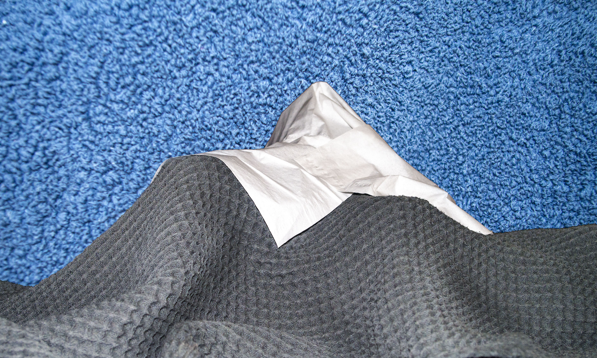

At the center of Bathroom is Towel Mountain. This is a massive mountain that towers 5 miles tall. To this day, it has never been summited. There are many myths about monsters and spirits that dwell in and around the mountain. One myth says that there is a great goddess who lives wrapped at the center of the mountain, whose hair is made of rain and whose skin is made of ice. The nomadic people who inhabit this cruel landscape honor the Goddess with song and dance in the hope that she will not unleash her icy rage upon the land.